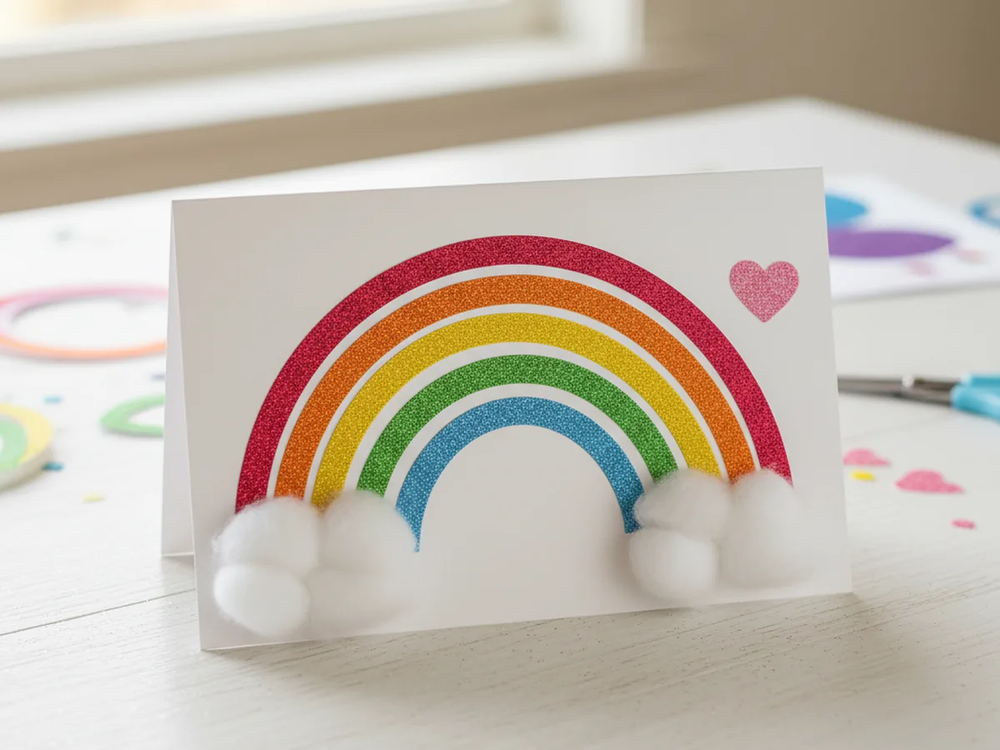
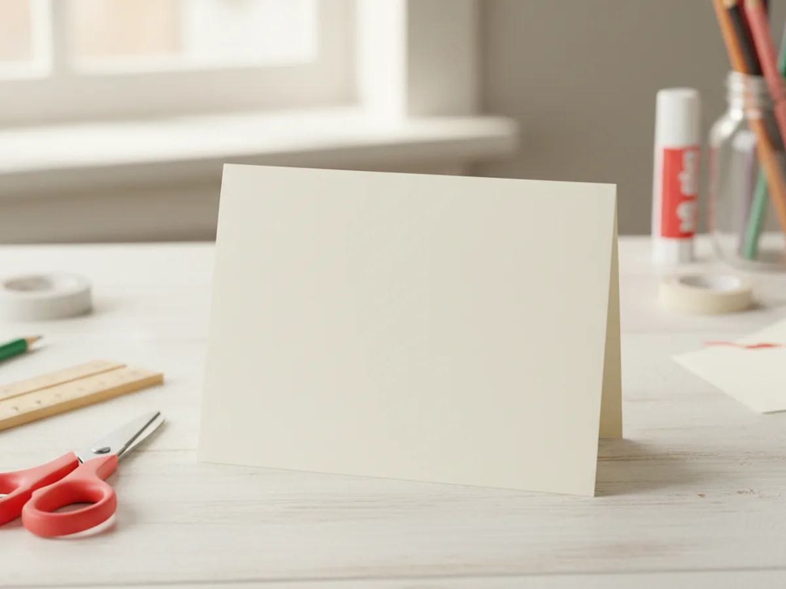
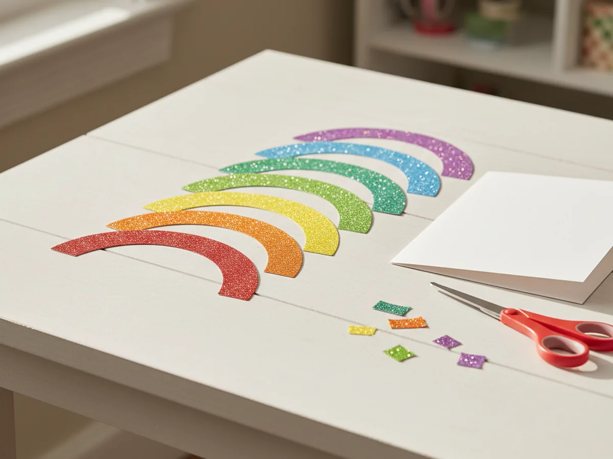
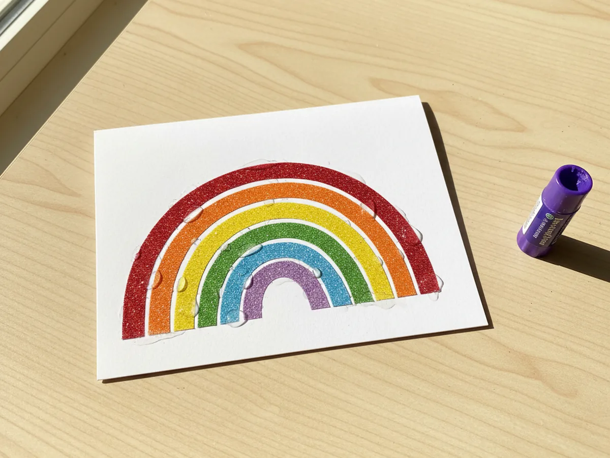
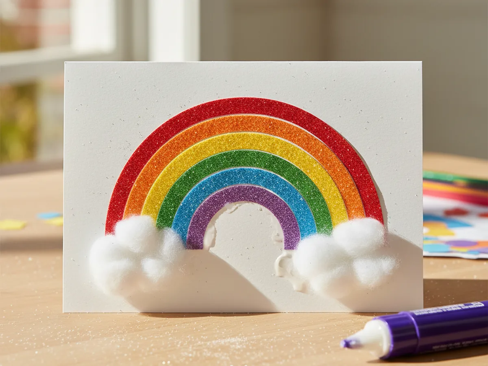
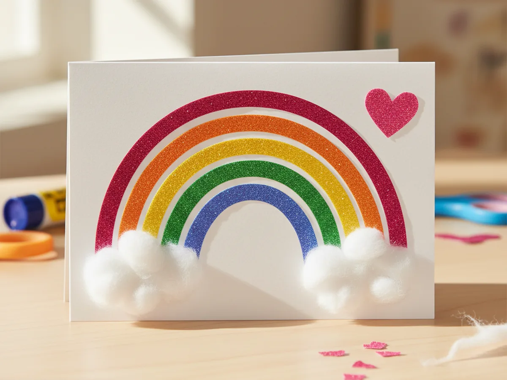
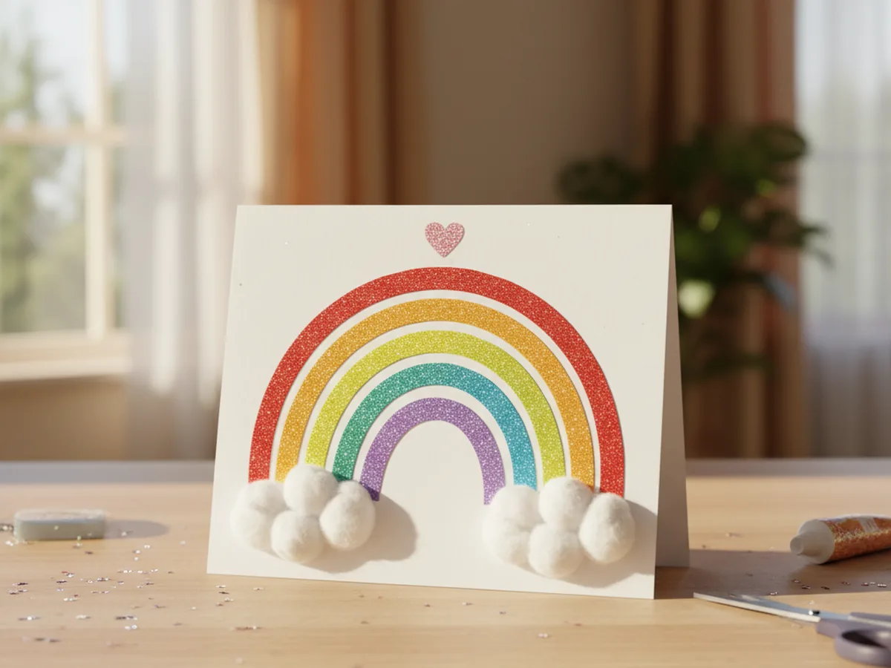

Sometimes a craft just needs a little sparkle to feel extra special, and that is exactly what this glitter paper craft is all about. We are turning a few sheets of sparkly paper into a sweet rainbow greeting card your child will be so proud to give away. It comes together in about thirty minutes, with no mess, no glitter explosion on the kitchen table, and no fancy crafting skills needed. ✨
The magic of this easy glitter paper craft is that the sparkly paper does all the heavy lifting. You just cut a few simple arches, glue them in order, and suddenly your card looks like something you would buy at a boutique stationery store. Your little one will gasp the moment the rainbow lines up on the front of the card, and you will love how clean and beginner-friendly the whole thing is.
Why Kids Love This Craft
Children adore this glitter paper craft because the sparkle is just irresistible. The way the glitter paper catches the light when they tilt the card, the rainbow of colors lined up on the table, the satisfying little stack of arches as they grow into a real rainbow shape, all of it feels like a tiny bit of magic. That sensory wow factor is huge for young kids and keeps them happily focused for the full thirty minutes.
This sparkly paper craft is also wonderful for fine motor practice. Cutting the curved arches gently builds the same scissor skills they need for school cutting projects later. Picking up the small pink heart and pressing it onto the right spot teaches finger control. And lining the rainbow arches up in the correct color order is a sweet little brain workout, perfect for preschoolers who are starting to recognize colors.
Best of all, this glitter craft with paper ends with a real keeper. Your child will hand the finished card to grandma, dad, or a best friend and watch their face light up. That moment of giving something they made with their own two hands is exactly the kind of warm shared memory that crafting is really about. 🌈
What You'll Need
Here is everything you need for this glitter paper craft. I always lay the sheets of glitter paper out on the table first so my little one can see all the colors at once and get excited about picking her favorites.
- Glitter Cardstock Paper, 30 Sheets, 15 Colors, the ideal multi-color pack so your child can pick a full rainbow of sparkly colors.
- Heavyweight White Cardstock, 8.5 x 11, 30 Sheets, sturdy enough to hold the card shape and the layered glitter rainbow.
- Elmer's Disappearing Purple Glue Sticks, washable and easy for tiny fingers to twist up and apply cleanly.
- Fiskars 5 Inch Blunt Tip Kids Scissors (3 Pack), the right safe size for cutting the gentle curves of the rainbow arches.
- Crayola Broad Line Markers, 10 Classic Colors, perfect for writing a sweet message inside the finished card.
- Two cotton balls, for two soft fluffy cloud shapes at the bottom of the rainbow.
- A pencil and small ruler, for lightly sketching the rainbow arches before cutting.
Step-by-Step Instructions
This glitter paper craft walks through six gentle steps that go from folding the card to gluing on each sparkly piece. Take your time and let your child do as much of the cutting and gluing as they can comfortably manage.
Step 1: Fold the White Cardstock Card Base
Take one sheet of white cardstock and fold it neatly in half so the short edges meet. Press firmly along the fold line with the side of a finger or the back of a spoon to make a clean crisp crease. Lay the folded card on the table with the fold on the left side, just like a real greeting card. This is your blank canvas for the rainbow.

Step 2: Cut the Rainbow Arches
Now grab six sheets of glitter paper in red, orange, yellow, green, blue, and purple. On each sheet, lightly sketch a half-moon arch shape with a pencil, and make each arch a little smaller than the last. Cut all six arches with kid scissors. Lay them out on the table in rainbow order from biggest to smallest so your child can already picture the finished card. Wonky curves only make this glitter paper craft look more handmade and charming.

Step 3: Glue the Rainbow onto the Card
Open the folded card slightly and lay the front flat on the table. Take the largest red arch first, swipe glue stick across its back, and press it onto the bottom center of the card front so the curve points upward. Then glue the orange arch on top of the red, the yellow on top of the orange, and continue stacking green, blue, and finally the smallest purple arch at the top. Press each one down firmly for a few seconds before adding the next.

Step 4: Add the Cloud Puffs
Now for the cutest part. Take two cotton balls and gently pull each one apart just slightly so it looks soft and puffy, like a real little cloud. Add a generous swipe of glue to one side of each cotton ball and press one onto the bottom left end of the rainbow and the other onto the bottom right end, right where the arches meet the card. Let your child smush them softly into place. Suddenly the rainbow looks like it is floating between two clouds.

Step 5: Add a Sparkly Heart Accent
Take a small piece of pink glitter paper and cut a little heart shape, about the size of a quarter. If your child is younger, fold the paper in half first and cut half a heart along the fold so it opens up perfectly symmetrical. Glue the heart in the upper right area of the card, just to the side of the top of the rainbow, like a sweet little floating heart in the sky. This tiny detail is what makes the glitter paper craft feel finished and gift-worthy. 💖

Step 6: Write a Message and Display the Card
Open the card and let your child write a short message inside, even if it is just a wobbly happy birthday or a row of hearts and smiley faces. If they cannot write yet, they can draw a little picture or scribble in their favorite marker color. Once the inside is done, gently stand the card up on the table so the front of the rainbow shows. Your glitter paper craft is officially finished and ready to give away or display on a shelf. 🎉

Variations to Try
Sparkly Heart Card for Mother's Day: Instead of a rainbow, cut three nested hearts in different sizes from pink, red, and gold glitter paper, then layer them on the front of the card like a stack of glittery valentines. It makes a perfect handmade gift for Mother's Day, a birthday card for a sister, or a sweet note for a best friend.
Glitter Paper Star Banner: Skip the card and instead cut a row of glittery stars in mixed colors. Punch a small hole at the top of each star and string them along a piece of bakers twine or yarn. Hang the banner across a bedroom doorway or above a birthday party table for a sparkly party decoration.
Glittery Bookmark Set: Cut long thin rectangles from different glitter paper colors, round the corners, and let your child decorate each one with marker drawings or paper stickers. Punch a hole at the top of each bookmark and tie a bit of ribbon through. This turns the same glitter paper into a tiny handmade gift set for cousins or classmates.
Final Thoughts
This glitter paper craft is one of those gentle little projects that takes almost no setup, leaves almost no mess, and gives the biggest happy smile when the rainbow finally lines up. The folding, the cutting, the careful gluing, every part of it unfolds at a calm pace that fits perfectly into a slow Saturday morning, a rainy afternoon, or even a quick after-school activity. Whatever the occasion, your child will remember the moment the two of you made something sparkly side by side.
If your little one finishes their first sparkly card, save this article on Pinterest so other craft-loving mamas can find it easily. Happy crafting!
More Crafts You'll Love
If your child loved this glitter paper craft, they will adore these other sweet sparkly projects too: